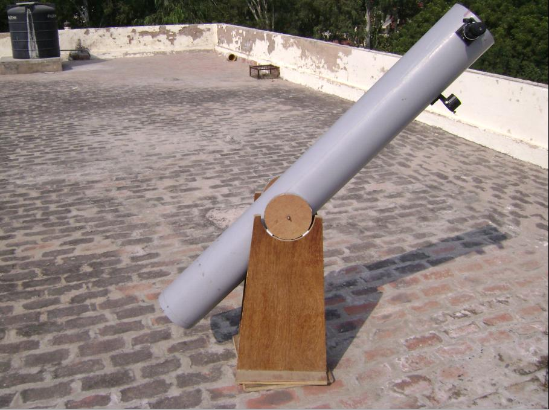

Beginner's guide
Some questions you might be having about the club, it's activities, and it's purpose.
What is the range/power of your telescopes ?The single most important specification for any astronomical telescope is its aperture. This term refers to the diameter of the telescope's main optical element, be it a lens or a mirror. A telescope's aperture relates directly to the two vital aspects of the scope's performance: its light-gathering power (which determines how bright objects viewed in the scope will appear), and its maximum resolving power (how much fine detail it can reveal).
Unfortunately, the first question most beginners ask is not "What is this telescope's aperture?" but "What is its magnifying power?" The truth is, any telescope can be made to provide almost any magnification, depending on what eyepiece is used. The factor that limits the highest power that can be used effectively on a given scope is, you may have guessed, its aperture. As magnification is increased, and the image in the scope grows larger, the light gathered by the telescope is spread over a larger area, so the image is dimmed. There is also an absolute limit, determined by the physical properties of light, to the resolution that is possible with any given aperture. As the magnification is pushed beyond that limit the image fails to reveal any additional detail and gradually breaks down into a dim, fuzzy blob.
As for 'range' - well, our telescopes are astronomical telescopes and are essentially focused at infinity. They would theoretically be able to see any object, provided it was bright enough.
What's going to be shown during Observation Sessions?
What about Astrophotography?
Astrophotography is a specialized type of photography that entails making photographs of astronomical objects in the sky such as the Moon, Sun, planets, stars, and deep sky objects such as star clusters and galaxies.
Hearing 'Astrophotography', you might be thinking of prolonged exposures. This
isn't necessarily so. Bright objects such as the moon and planets can be taken directly through the
eyepiece.
See this article about afocal
digital astrophotography
Fainter objects such as star clusters, nebulae etc. need prolonged exposures of several minutes. A motorized equatorial mount is required to track the object as the sky rotates.
Quizzes, Lectures and Documentaries
In these we concentrate more on the theoretical and also the 'fun' parts of Astronomy. We are hoping to make them more popular.